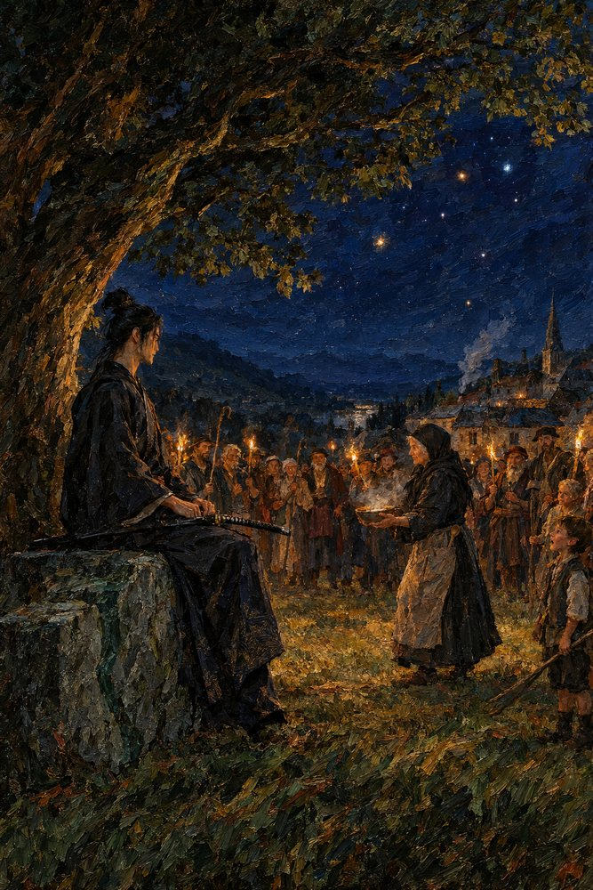

Record 3 of 10
The bowl on the green
On the night of the nineteenth of Garren a tiny old woman with a wooden spoon crosses the green at Vilarnau through the whole watching village and puts a bowl of something warm into the hands of Tomobe no Higaide, seated on the Stone; the smith and the rest stand forty paces off.
A tall lean man in a dark robe with a long sword across his knees sits upright on the end of a waist-high grey granite block beneath a great oak at night, a tiny old woman in a black headscarf and long apron crossing the grass toward him with a steaming bowl in both hands, a ragged half-ring of villagers holding rushlights behind her, a small boy with a switch at the right edge, and thatched roofs, a church spire and a thread of woodsmoke below a deep blue sky of stars.